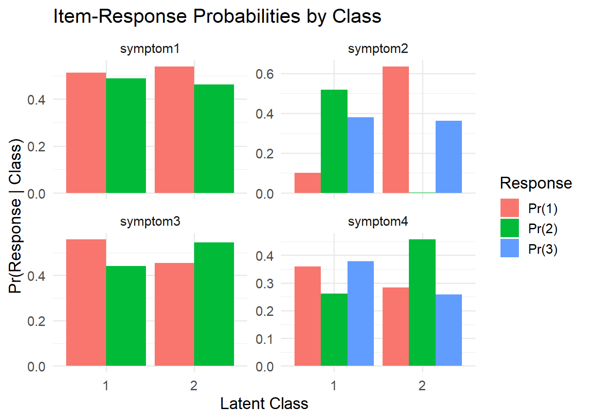

#install.packages(c("poLCA", "tidyLPA", "flexmix", "randomLCA", "dplyr", "ggplot2", "tibble"))Latent Class Analysis in R
Introduction
Latent Class Analysis (LCA) is a person-centered, categorical latent variable modeling approach used to identify unobserved subgroups within a population based on response patterns across multiple observed categorical variables. This tutorial introduces LCA using R, focusing on practical implementation, interpretation, and extensions (excluding Bayesian methods). Specifically, it covers (and its a work in progress):
Standard LCA using poLCA (categorical variables)
Continuous latent profile analysis using tidyLPA
Multigroup LCA using subgroup splits (male/female)
Multilevel (random-effects) LCA using randomLCA
Introduction
Latent Class Analysis (LCA) is a statistical method used to identify unobserved (latent) subgroups within a population based on individual response patterns across a set of categorical variables. Unlike variable-centered approaches like regression or factor analysis, LCA is person-centered—it aims to classify individuals into mutually exclusive, exhaustive latent classes. This method is widely used in psychology, public health, sociology, and education to uncover typologies or behavioral subgroups.
This tutorial will walk you through the theory, implementation, and interpretation of LCA in R using the poLCA, tidyLPA, and randomLCA packages. We will explore model selection, result interpretation, visualization, and extensions such as multigroup and multilevel LCA.
You should make sure to read some key papers using LCA as well as LCA tutorials in R. This is only a starting point. My lecture notes are here.
Libraries and Installation
You will need to install and load several packages:
library(poLCA) # For classical latent class models with categorical indicators
library(tidyLPA) # For mixture models with continuous indicators (tidy syntax)
library(flexmix) # For latent class regression
library(randomLCA) # For multilevel or random-effects LCA
library(dplyr)
library(ggplot2)
library(tibble)Simulated Categorical Data for poLCA
Code explanation
This sets the random number generator seed to 123. It ensures reproducibility, meaning that every time this code is run, it produces the exact same random sample. Without this line, the numbers would change every time.
Then we create a tibble object (i.e., a dataframe) and assign it to an object called categorical data. The code then creates a simulated dataset named categorical_data with 500 rows and 4 categorical variables we are calling symptoms. Each symptom is randomly generated to have either 2 or 3 response categories. This simulated data is used for demonstration purposes in latent class analysis. Note: sampled values are with replacement.
set.seed(123)
categorical_data <- tibble(
symptom1 = sample(1:2, 500, replace = TRUE),
symptom2 = sample(1:3, 500, replace = TRUE),
symptom3 = sample(1:2, 500, replace = TRUE),
symptom4 = sample(1:3, 500, replace = TRUE)
)Note on the dataset
First note that poLCA expects the coding to start at 1, and not 0.
Here, binary items (symptom1, symptom3) are explicitly coded as:
- 1 = Yes (the person has the symptom)
- 2 = No (the person does not have the symptom)
Multinomial items (symptom2, symptom4) reflect three unordered or ordinal response categories (e.g., levels of severity or type of symptom presentation), though the specific meaning of 1–3 is not defined in the code and would typically depend on survey or assessment documentation.
LCA with poLCA
Specifying the Model
The poLCA function is used to do the latent variable modeling in this example. IMHO, this package is extremely limited, however it is fine for the most basic of analyses (which are not that basic).
The model takes the following form. cbind binds or merges the columns you want to use for the analysis, here the four symptoms. As with all models in R, the ~ 1 represents on intercept-only model (i.e., no covariates).
f <- cbind(symptom1, symptom2, symptom3, symptom4) ~ 1Fitting Models with 2 to 4 Classes
LCA is iterative. You must estimate several models and chose the best-fitting. Here I am estimating three models representing LC two through four. Why are we not estimating one latent class?
We stop when we get the best-fiting model as shown below in the model fit comparison section.
model_2class <- poLCA(f, data = categorical_data, nclass = 2, maxiter = 1000)Warning in matrix(sqrt(diag(VCE.beta)), nrow = ncol(x), ncol = (R - 1)): data
length differs from size of matrix: [100 != 1 x 1]Conditional item response (column) probabilities,
by outcome variable, for each class (row)
$symptom1
Pr(1) Pr(2)
class 1: 0.5122 0.4878
class 2: 0.5387 0.4613
$symptom2
Pr(1) Pr(2) Pr(3)
class 1: 0.1009 0.5185 0.3806
class 2: 0.6342 0.0031 0.3627
$symptom3
Pr(1) Pr(2)
class 1: 0.5585 0.4415
class 2: 0.4544 0.5456
$symptom4
Pr(1) Pr(2) Pr(3)
class 1: 0.3600 0.2618 0.3782
class 2: 0.2842 0.4572 0.2586
Estimated class population shares
0.6305 0.3695
Predicted class memberships (by modal posterior prob.)
0.646 0.354
=========================================================
Fit for 2 latent classes:
=========================================================
number of observations: 500
number of estimated parameters: 13
residual degrees of freedom: 22
maximum log-likelihood: -1783.205
AIC(2): 3592.41
BIC(2): 3647.199
G^2(2): 22.85481 (Likelihood ratio/deviance statistic)
X^2(2): 23.1458 (Chi-square goodness of fit)
ALERT: iterations finished, MAXIMUM LIKELIHOOD NOT FOUND
model_3class <- poLCA(f, data = categorical_data, nclass = 3, maxiter = 1000)Conditional item response (column) probabilities,
by outcome variable, for each class (row)
$symptom1
Pr(1) Pr(2)
class 1: 0.5182 0.4818
class 2: 0.0108 0.9892
class 3: 0.6649 0.3351
$symptom2
Pr(1) Pr(2) Pr(3)
class 1: 0.2190 0.3957 0.3854
class 2: 0.7412 0.0160 0.2428
class 3: 0.6626 0.0000 0.3374
$symptom3
Pr(1) Pr(2)
class 1: 0.5580 0.4420
class 2: 0.0000 1.0000
class 3: 0.4174 0.5826
$symptom4
Pr(1) Pr(2) Pr(3)
class 1: 0.3664 0.263 0.3706
class 2: 0.1777 0.000 0.8223
class 3: 0.1641 0.834 0.0019
Estimated class population shares
0.8276 0.0329 0.1395
Predicted class memberships (by modal posterior prob.)
0.866 0.034 0.1
=========================================================
Fit for 3 latent classes:
=========================================================
number of observations: 500
number of estimated parameters: 20
residual degrees of freedom: 15
maximum log-likelihood: -1779.102
AIC(3): 3598.204
BIC(3): 3682.496
G^2(3): 14.64944 (Likelihood ratio/deviance statistic)
X^2(3): 14.85317 (Chi-square goodness of fit)
ALERT: iterations finished, MAXIMUM LIKELIHOOD NOT FOUND
model_4class <- poLCA(f, data = categorical_data, nclass = 4, maxiter = 1000)Conditional item response (column) probabilities,
by outcome variable, for each class (row)
$symptom1
Pr(1) Pr(2)
class 1: 0.0000 1.0000
class 2: 0.9999 0.0001
class 3: 0.7750 0.2250
class 4: 0.0491 0.9509
$symptom2
Pr(1) Pr(2) Pr(3)
class 1: 0.4095 0.2734 0.3171
class 2: 0.4256 0.1683 0.4061
class 3: 0.2062 0.3962 0.3975
class 4: 0.2744 0.3784 0.3472
$symptom3
Pr(1) Pr(2)
class 1: 0.0000 1.0000
class 2: 0.4431 0.5569
class 3: 0.5328 0.4672
class 4: 0.9740 0.0260
$symptom4
Pr(1) Pr(2) Pr(3)
class 1: 0.2456 0.3441 0.4103
class 2: 0.0778 0.8830 0.0392
class 3: 0.4873 0.0354 0.4773
class 4: 0.3235 0.4227 0.2538
Estimated class population shares
0.1747 0.188 0.417 0.2202
Predicted class memberships (by modal posterior prob.)
0.224 0.182 0.34 0.254
=========================================================
Fit for 4 latent classes:
=========================================================
number of observations: 500
number of estimated parameters: 27
residual degrees of freedom: 8
maximum log-likelihood: -1775.597
AIC(4): 3605.193
BIC(4): 3718.987
G^2(4): 7.638293 (Likelihood ratio/deviance statistic)
X^2(4): 7.633208 (Chi-square goodness of fit)
ALERT: iterations finished, MAXIMUM LIKELIHOOD NOT FOUND
Model Fit Comparison
bic_values <- c(
BIC_2 = model_2class$bic,
BIC_3 = model_3class$bic,
BIC_4 = model_4class$bic
)
print(bic_values) BIC_2 BIC_3 BIC_4
3647.199 3682.496 3718.987 Lower BIC values indicate better fit. Select the number of classes accordingly.
| Model | LL | AIC | BIC | G² | X² | Params | df | Preferred? |
|---|---|---|---|---|---|---|---|---|
| 2-class | -1783.21 | 3592.41 | 3647.20 | 22.85 | 23.15 | 13 | 22 | Yes |
| 3-class | -1779.10 | 3598.20 | 3682.50 | 14.65 | 14.85 | 20 | 15 | No |
| 4-class | -1775.60 | 3605.19 | 3718.99 | 7.64 | 7.63 | 27 | 8 | No |
How to compute entropy
poLCA does NOT compute entropy, which is technically not a fit statistic but a measure of classification certainty.
To compute entropy (should always be included, and should be high):
entropy<-function (p) sum(-p*log(p))
error_prior <- entropy(model_2class$P) # Class proportions
error_post <- mean(apply(model_2class$posterior, 1, entropy))
LCA2_entropy <- (error_prior - error_post) / error_prior
LCA2_entropy[1] 0.4055313This entropy is extremely low. Notice the fit is better, and you may well find the entropy of LC3, etc. is higher.
Interpretation of Output
print(model_2class$P)[1] 0.6304614 0.3695386print(model_2class$probs)$symptom1
Pr(1) Pr(2)
class 1: 0.5122364 0.4877636
class 2: 0.5386575 0.4613425
$symptom2
Pr(1) Pr(2) Pr(3)
class 1: 0.1009128 0.518461219 0.3806260
class 2: 0.6342460 0.003058431 0.3626956
$symptom3
Pr(1) Pr(2)
class 1: 0.5584610 0.4415390
class 2: 0.4543825 0.5456175
$symptom4
Pr(1) Pr(2) Pr(3)
class 1: 0.3600143 0.2617789 0.3782068
class 2: 0.2842054 0.4572148 0.2585798head(model_2class$posterior) [,1] [,2]
[1,] 0.9979742 0.002025753
[2,] 0.9979742 0.002025753
[3,] 0.6683339 0.331666081
[4,] 0.6598969 0.340103109
[5,] 0.4409736 0.559026359
[6,] 0.5711748 0.428825155Interpretation: After estimating the model, poLCA assigns approximately 63% of the sample to Class 1 and 37% to Class 2. These are model-implied proportions, meaning the algorithm estimates that these are the relative sizes of the two latent classes in the population based on response patterns.
| Term | What It Means | |
|---|---|---|
$P |
Proportion of total sample estimated to belong to each class | |
$probs |
Probability of each item response given class membership (Pr(item class)) | |
$posterior |
For each individual: probability of being in each class given their response pattern |
Class Proportions
| Class | Estimated Proportion |
|---|---|
| Class 1 | 63.0% |
| Class 2 | 36.9% |
Item Response Probabilities
| Symptom | Response | Class 1 | Class 2 |
|---|---|---|---|
| symptom1 | 1 | 0.512 | 0.539 |
| 2 | 0.488 | 0.461 | |
| symptom2 | 1 | 0.101 | 0.634 |
| 2 | 0.518 | 0.003 | |
| 3 | 0.381 | 0.363 | |
| symptom3 | 1 | 0.558 | 0.454 |
| 2 | 0.442 | 0.546 | |
| symptom4 | 1 | 0.360 | 0.284 |
| 2 | 0.262 | 0.457 | |
| 3 | 0.378 | 0.259 |
Each row gives the probability that a person in Class 1 or Class 2 endorses a specific response level on a particular symptom. For instance, under symptom2, Class 1 has a 51.8% probability of responding with 2, while Class 2 has a 63.4% probability of responding with 1.
This format makes it easy to see how well the classes are separated. You can spot which symptoms help tell the classes apart by looking for:
Big differences between classes for the same response option.
Clear patterns where one class is much more likely—or unlikely—to give a certain response (for example, Class 2 almost never chooses response 2 for symptom2).
This helps assess both class separation (how different the classes are) and within-class consistency (how similar responses are within each class).
Here is how I would describe the classes: Class 1 (63% of respondents) is the class of respondents who endorse symptom 3 with high probability, whereas class 2 (~37%) endorse sympton 2 with high probability.
Visualization of Item-Response Probabilities
library(dplyr)
library(tidyr)
library(ggplot2)
library(purrr)
Attaching package: 'purrr'The following object is masked from 'package:base':
%||%# Extract and reshape item-response probabilities
probs_long <- model_2class$probs %>%
imap_dfr(~{
as_tibble(.x) %>%
mutate(Class = row_number()) %>%
pivot_longer(-Class, names_to = "Response", values_to = "Probability") %>%
mutate(Symptom = .y)
})
# Plot
ggplot(probs_long, aes(x = factor(Class), y = Probability, fill = Response)) +
geom_bar(stat = "identity", position = "dodge") +
facet_wrap(~Symptom, scales = "free_y") +
labs(
title = "Item-Response Probabilities by Class",
x = "Latent Class",
y = "Pr(Response | Class)",
fill = "Response"
) +
theme_minimal(base_size = 14)
| Symptom | Class Separation | Discriminative Value |
|---|---|---|
| Symptom 1 | Low | Weak |
| Symptom 2 | High | Strong |
| Symptom 3 | Moderate | Good |
| Symptom 4 | Moderate | Fair |
Extensions
Next time we will look at extensions.
Model Assessment Recap
- Fit indices: Lower BIC and AIC indicate better models.
- Entropy: Higher entropy (closer to 1) means clearer class separation.
- Posterior classification probabilities: Evaluate individual classification confidence.
- Class prevalence and response patterns: Interpret substantive meaning of each class.
Conclusion
LCA is a powerful technique for uncovering latent subgroups in cross-sectional data. This tutorial showed how to use poLCA for categorical indicators and tidyLPA for continuous indicators, how to evaluate and compare models, and how to extend the analysis to multigroup and multilevel settings. This foundation can support deeper exploration of typologies in developmental, health, and behavioral research.